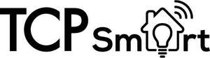

Trade Mark Journal No.2025/030 25 July 2025
UK00004221527 19 June 2025 (9,11)

- Class 9
- Lighting dimmers; Lighting ballasts; Lighting control panels; Temperature monitors [valves] for central heating radiators; Room thermostats; Dimmer switches; Electrical switches; Sensor switches; Light switches; Power switches; Toggle switches [electric]; Wireless switches; Cut-out switches; Switches, electric; Electric switches; Dimmer switches for lights; Push switches (Electrical -); Touch switches; Proximity switches; Time switches; Electric light switches; Electrical switch timers; Wall lights (fittings for -) [switches]; Time switches, automatic; Automatic time switches; Domestic switches [electric]; Electric switch plates; Switch plates [electric]; Dimmers; Sockets, plugs and other contacts [electric connectors]; Power strips with movable sockets; Electrical sockets; Electric sockets; Connector sockets (Electric -); Sockets, plugs and other contacts [electric connections]; Plugs, sockets and other contacts [electric connections]; Power strips with moveable sockets; Multi-outlet socket blocks; Socket outlets (Electric -); Remote control sockets; Electric power supply sockets; Electrical adapters; Plug adaptors; Electrical adaptors; Electric plug adapters; Electrical plugs; Smart locks; Smart speakers; Smart home software; Application software for smart phones; Downloadable application software for smart phones; Downloadable smart phone applications (software); Downloadable smart phone application software; Light dimmers.
- Class 11
- Lighting; Lighting and lighting reflectors; Lighting fixtures; Bulbs for lighting; Lanterns for lighting; Torches for lighting; Lighting tracks [lighting apparatus]; Lamps for security lighting; Luminaires for outdoor lighting; Lighting fittings; Incandescent lighting fixtures; Outdoor lighting; Electrical lamps for outdoor lighting; Infrared lighting fixtures; Electrical lamps for indoor lighting; Lighting installations; Installations for lighting; Decorative lighting; Electric lighting; Electric lighting fixtures; Fluorescent luminaires for stage lighting; Electrical lighting fixtures; Sconce lighting fixtures; Fluorescent luminaires for architectural lighting; Halogen architectural lighting fixtures; Lamps for lighting purposes; Outdoor lighting fittings; Architectural lighting fixtures; Emergency lighting; Indoor fluorescent lighting fixtures; Lamps for vehicle lighting; Lighting louvres; Lighting transformers; Outdoor electrical lighting fixtures; Industrial lighting fixtures; Lighting armatures; Display lighting; Indoor electrical lighting fixtures; Lighting elements; Pendant fluorescent lighting fixtures; Security lighting; Electric torches for lighting; Lighting panels; Indoor fluorescent electrical lighting fittings; Commercial lighting fixtures; Residential lighting fixtures; Garden lighting; Lighting apparatus; Apparatus for lighting; Installations for electric lighting; Electric lighting installations; LED lighting fixtures; Emergency lighting installations; Lighting glasses; Lighting tubes; Lighting units; Electric indoor lighting installations; Light Emitting Diode lighting fixtures; Fluorescent lighting apparatus; Decorative lighting sets; Lighting apparatus and installations; Apparatus and installations for lighting; Luminous cables for lighting purposes; LED lighting installations; Electric apparatus for lighting; Electric lighting apparatus; Installations for lighting christmas trees; Lighting fixtures for household use; Fluorescent lighting tubes; Electric indoor lighting apparatus; Decorative electric lighting apparatus; Luminous tubes for lighting; Tubes (Luminous -) for lighting; Lighting fixtures for commercial use; Emergency lighting apparatus; Lights for incandescent lamps; LED [light-emitting diode] lighting fixtures; Lighting being for use with security systems; Decorative lighting for christmas trees; Radiators [heating]; Appliances for heating; Humidifiers for central heating radiators; Apparatus for heating; Heating apparatus; Thermal radiators for the heating of buildings; Electric radiators for heating buildings; Heating units; Heating apparatus, electric; Electric heating apparatus; Electric radiant heating apparatus; Radiators for central heating systems; Electrical heating elements; Air heating installations; Heating apparatus for use in the home; Heating, ventilating, and air conditioning and purification equipment (ambient); Radiator heaters; Heaters; Convector heaters; Electric heaters; Convection heaters; Air heaters; Room heaters; Fan heaters; Radiant heaters; Electric space heaters; Radiant fan heaters; Portable electric heaters; Radiant space heaters; Temperature regulators [thermostatic valves] for central heating radiators; Temperature limiters [valves] for central heating radiators; Temperature sensitive switches [thermostatic valves] for central heating radiators; Control valves (Thermostatic -) for central heating radiators; Electric radiant heaters for household use; Temperature responsive control apparatus [thermostatic valves] for central heating radiators; Thermal controls [valves] for central heating radiators; Temperature control apparatus [valves] for central heating radiators; Electric radiant heaters [for household purposes]; Automatic temperature regulators for central heating radiators; Temperature limiters for central heating radiators [thermostatic valves] incorporating expansion rods; Radiator valves [thermostatic]; Cooling fans; Fans [air-conditioning]; Ceiling fans; Electric cooling fans; Electric bladeless fans; Electric fans; Room fans; Air conditioning fans; Room air fans; Radial air fans; Motorised fans for air conditioning; Portable electric fans; Electric heating fans; Fans (Electric -) for personal use; Electric fans for personal use; Fans for air conditioning apparatus; Electric fans for household use; Electric fans [for household purposes]; Air dehumidifiers; Electrically powered air blowers for air-conditioning purposes; Electric air conditioners; Dehumidifiers; De-humidifiers; Electric dehumidifiers; Electric dehumidifier for household use; Humidifiers; Dehumidifiers for household use; Air humidifiers; Dehumidifiers for household purposes; Dehumidifiers for commercial use; Electric humidifiers; Room humidifiers [apparatus]; Humidifiers for household use; Electric humidifiers for household use; Portable air conditioners; Air purifiers for household use; Portable evaporative air coolers; Air purifiers; Room air conditioners; Air humidifying apparatus; Electric air purifiers; Humidifiers [for household purposes]; Cooling apparatus and appliances; Air conditioners; Air purifiers [for household purposes]; Humidifiers [other than for medical use]; Wall lights (fittings for -) [other than switches]; Control devices [thermostatic valves] for heating installations; Valves (temperature sensitive controls for automatically operating -) [parts of heating installations]; Sockets for electric lights; Cord pendants [light fittings]; Lamp fittings; Smart light bulbs; Light bulbs, electric; Electric light bulbs; Electrical light bulbs; Light fixtures; LED light bulbs; Electric light fittings; Light fittings; Light installations; LED light strips.
Technical Consumer Products Limited